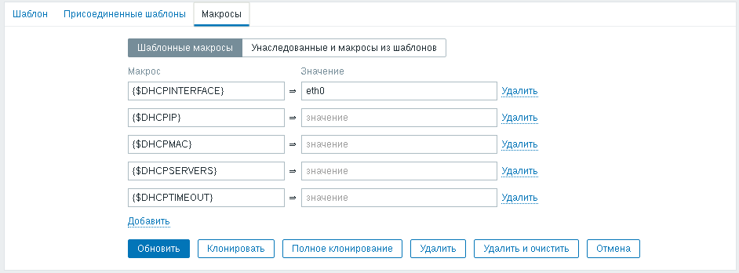
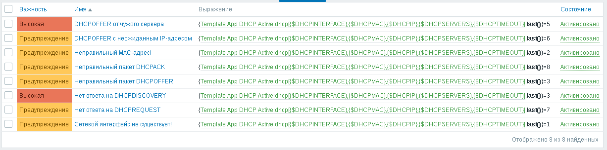
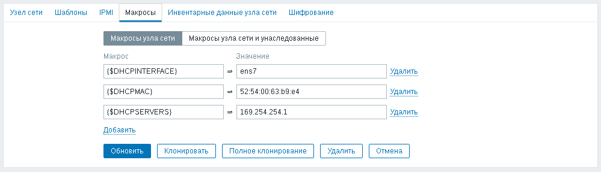

Как-то раз на работе потребовалось поставить на контроль DHCP-сервер. Сделать это нужно было, как обычно, срочно. Пока я делал, заказчики постоянно "держали руку на пульсе", интересовались результатами и поторапливали. Пытался воспользоваться различными утилитами командной строки, но в итоге наиболее пригодным вариантом оказалось написание собственного скрипта на python с использованием библиотеки ScaPy, благо в интернете можно найти примеры подобных скриптов. Собирались испытать скрипт на одном DHCP-сервере, а потом поставить на контроль ещё несколько десятков.
Года через два наткнулся на этот забытый скрипт. Раз уж он никому не нужен, то можно попытаться довести его до ума и поделиться им. Забрал скрипт домой и стал экспериментировать на виртуалках. Пока доводил скрипт до ума, на работе снова возникла необходимость поставить на контроль один DHCP-сервер, никак не связанный с теми, для которых скрипт первоначально писался.
Для начала ознакомимся немого с принципами работы DHCP.
Выдача настроек по DHCP происходит в следующей последовательности:
Для продления аренды ранее выданного сервером IP-адреса клиент использует запросы DHCPREQUEST, указывая в запросе ранее выданный ему IP-адрес.
Также протоколом предусмотрены пакеты DHCPDECLINE и DHCPINFO.
При помощи DHCPDECLINE клиент может сообщить серверу, что предложенный им IP-адрес уже используется.
Если клиенту не нужен IP-адрес от DHCP-сервера, то вместо запроса DHCPREQUEST клиент может отправить запрос DHCPINFORM для запроса дополнительных сетевых параметров. Так же как и в ответ на запрос DHCPREQUEST, на запрос DHCPINFORM сервер отвечает пакетом DHCPACK.
Если клиент хочет вернуть IP-адрес DHCP-серверу, он может отправить серверу запрос DHCPRELEASE. Если сервер получит такой запрос, он помечает IP-адрес как свободный. Протоколом не предусмотрен ответ на запросы DHCPRELEASE, поэтому невозможно убедиться в том, что сервер получил и обработал запрос.
А теперь перейдём к делу. Для контроля работоспособности DHCP-сервера был подготовлен скрипт dhcp.py, принимающий следующие аргументы:
Обязательно для указания только имя интерфейса. Все остальные настройки не обязательны и могут быть опущены.
Алгоритм работы скрипта следующий:
Коды ошибок скрипта, которые он выдаёт на стандартный вывод:
Для работы скрипту необходимы привилегии пользователя root, но Zabbix работает под простым пользователем, поэтому придётся воспользоваться sudo. Если использовать скрипт dhcp.py как скрипт внешнего опроса, то для его запуска через sudo потребуется создать ещё один скрипт. Но такое решение не кажется мне красивым. Я решил вызывать скрипт dhcp.py через Zabbix-агента, для чего понадобится настроить в конфигурации агента UserParameter, где найдётся место и для sudo.
Сначала установим пакет sudo, если он ещё не установлен:
# apt-get install sudo
И выдадим пользователю zabbix, от имени которого работает Zabbix-агент, права запускать скрипт dhcp.py с правами пользователя root:
Defaults:zabbix !requiretty zabbix ALL=(ALL) NOPASSWD:/etc/zabbix/dhcp.py *
Теперь положим скрипт dhcp.py в каталог /etc/zabbix и выдадим права запускать его:
# chmod +x /etc/zabbix/dhcp.py
В конфигурации Zabbix-агента в файле /etc/zabbix/zabbix_agentd.conf добавим строчку:
UserParameter=dhcp[*],/usr/bin/sudo /etc/zabbix/dhcp.py "$1" "$2" "$3" "$4" "$5"
После изменения конфигурации Zabbix-агента, его нужно перезапустить:
# systemctl restart zabbix-agent
Для того, чтобы в последних данных можно было наглядно видеть результат последней проверки, я подготовил файл для преобразования значений Valuemap_DHCP.xml. В файле созданы следующие преобразования значений:
Также я подготовил два варианта шаблона:
В шаблоне имеются макросы, при помощи которых можно настроить элемент данных, который контролирует состояние DHCP-сервера. Указано только одно значение по умолчанию для имени интерфейса - eth0, т.к. этот аргумент обязателен для указания.
В шаблоне есть только один элемент данных, который использует макросы из шаблона в качестве своих аргументов по умолчанию:
К этому элементу данных присоединено 8 триггеров, два из которых имеют высокую важность, т.к. свидетельствуют о неработоспособности DHCP-сервера или о появлении чужого DHCP-сервера. Остальные триггеры имеют уровень важности "Предупреждение":
Для примера я настроил контроль исправности DHCP-сервера на своём домашнем компьютере. В виртуальную машину с Zabbix проброшен интерфейс ens7, смотрящий в локальную сеть с DHCP-сервером. На интерфейсе отсутствуют сетевые настройки, используется он только для контроля исправности DHCP-сервера. На уровне сетевого узла созданы макросы, переопределяющие значения по умолчанию, определённые в шаблоне:
В последних данных можно увидеть числовое значение результата проверки DHCP-сервера и короткий текст, позволяющий быстро понять, какой именно результат получен: